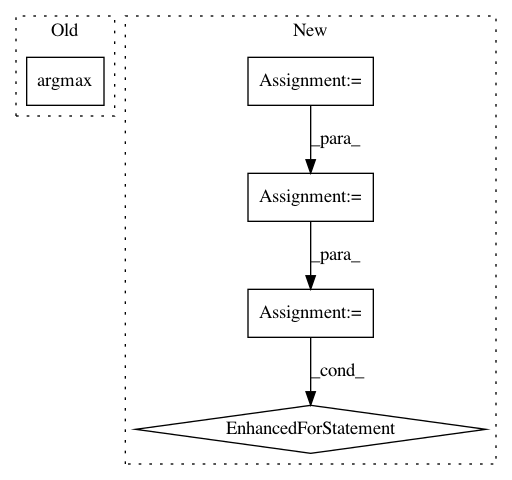

1e619d91956c813d2328a5460da0a273fe135905,hook/zmes_hook_helpers/face.py,Face,detect,#Face#,123
Before Change
preds = self.svm_model.predict_proba([face_encoding])[0]
print (preds, self.svm_model.classes_)
best_pred_ndx = np.argmax(preds)
best_pred = preds[best_pred_ndx]
loc = face_locations[idx]
if best_pred >= g.config["face_recog_min_confidence"]:
After Change
face_encodings = face_recognition.face_encodings(rgb_image, known_face_locations=face_locations, num_jitters=self.num_jitters)
// Use the KNN model to find the best matches for the test face
closest_distances = self.knn.kneighbors(face_encodings, n_neighbors=1)
are_matches = [closest_distances[0][i][0] <= g.config["face_recog_dist_threshold"] for i in range(len(face_locations))]
matched_face_names = []
matched_face_rects = []
for pred, loc, rec in zip(self.knn.predict(face_encodings), face_locations, are_matches):
label = pred if rec else g.config["unknown_face_name"]
matched_face_rects.append((loc[3], loc[0], loc[1], loc[2]))
matched_face_names.append(label)
conf.append(1)
return matched_face_rects, matched_face_names, conf
In pattern: SUPERPATTERN
Frequency: 3
Non-data size: 5
Instances
Project Name: pliablepixels/zmeventnotification
Commit Name: 1e619d91956c813d2328a5460da0a273fe135905
Time: 2019-11-15
Author: pliablepixels@gmail.com
File Name: hook/zmes_hook_helpers/face.py
Class Name: Face
Method Name: detect
Project Name: librosa/librosa
Commit Name: e843dc7c9b240266f411f30d90d05b9e7c81215d
Time: 2015-01-06
Author: brian.mcfee@nyu.edu
File Name: librosa/util.py
Class Name:
Method Name: match_intervals
Project Name: yahoo/TensorFlowOnSpark
Commit Name: 981e4266d4ea816b08a762193bd52f40cd1a3242
Time: 2019-08-07
Author: leewyang@verizonmedia.com
File Name: examples/mnist/keras/mnist_inference.py
Class Name:
Method Name: inference